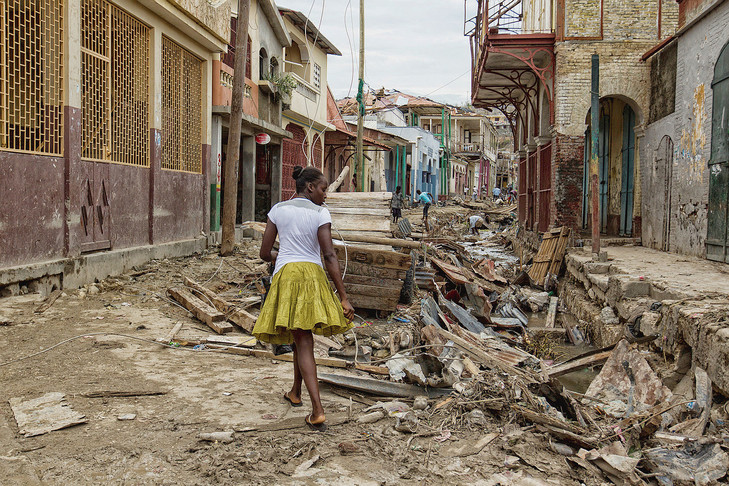

L’ouragan Matthew a semé chaos et désolation en Haïti, où un deuil national de trois jours a débuté dimanche 9 octobre. Aux États-Unis, l’ouragan a également fait des victimes et les autorités craignent la montée des eaux.
Haïti a commencé dimanche 9 octobre un deuil national de trois jours en hommage aux victimes de l’ouragan Matthew qui a fait un millier de morts dans le pays. Des régions entières restent coupées de tout, près d’une semaine après le passage de l’ouragan, en raison de l’effondrement des ponts et des dégâts sur les routes. La protection civile a annoncé qu’un bilan définitif ne serait pas disponible avant mercredi au plus tôt.
Selon le coordonnateur humanitaire des Nations unies en Haïti, Mourad Wahba, « pas loin d’un million de personnes ont besoin en urgence d’aide humanitaire ». Le pays, qui compte 10 millions d’habitants, est l’un des plus démunis de la planète, avec 78 % de la population qui vit en dessous du seuil de pauvreté. L’Unicef estime que 1,3 million de Haïtiens sont touchés par les dégâts causés par l’ouragan.
Samedi 8 octobre, un premier avion d’aide humanitaire affrété par les États-Unis a ravitaillé Port-au-Prince. La France, de son côté, a prévu deux avions avec des stations de potabilisation de l’eau, 60 experts de la sécurité civile, et des kits médicaux.
Après le passage de l’ouragan Matthew, les experts craignent en effet un regain du choléra, déjà présent en Haïti. Cette maladie transmise par l’eau contaminée a fait près de 10 000 morts dans le pays depuis 2010, et on enregistre toujours près de 500 cas chaque semaine.
Le coordonnateur de l’ONU a aussi pointé du doigt la destruction de 80 % des plantations agricoles dans les zones rurales, qui va profondément bouleverser l’économie du pays. « Au-delà de la bonne volonté de l’aide, il faut penser à un développement davantage planifié, pouvoir coordonner cette aide et la déplacer là où elle est nécessaire et pas là où elle est le plus facile d’accès », a-t-il relevé. Autrement dit : permettre aux Haïtiens de gérer eux-mêmes la reconstruction des régions affectées est un impératif pour ne pas répéter le fiasco post-séisme de 2010.
Après son passage dévastateur en Haïti, l’ouragan Matthew s’est légèrement essoufflé aux États-Unis, où il a fait 17 morts. Rétrogradé en catégorie 1 contre 4 auparavant (sur une échelle qui compte 5 catégories), il a provoqué d’intenses précipitations ce qui inquiète les autorités américaines, qui craignent une montée de certains fleuves ou rivières.
« Un décès sur quatre lors des ouragans aux États-Unis est lié à la montée des cours d’eau dans les terres à cause des fortes pluies », a mis en garde le directeur du Centre d’information sur les ouragans (NHC), sur Twitter. Le long de l’océan Atlantique, la montée des eaux liées à l’ouragan – jusqu’à 3 mètres attendus par endroits –, cumulée à la marée haute, va créer une association « dangereuse », a averti le NHC. Environ trois millions de personnes ont été évacuées dans les villes côtières.
Division territoriale
- Le département est la plus grande division territoriale. Le code département va de 01 à 10. Chaque département est administré par un Conseil de trois membres élus pour quatre ans par l'Assemblée départementale. L'exécutif nomme un délégué départemental, chargé d'administrer les différents ministères déconcentrés et qui travaille de concert avec l'assemblée départementale. - L'arrondissement est le deuxième niveau administratif. - La commune a l'autonomie administrative et financière. Chaque commune de la République est administrée par un conseil de trois membres élus au suffrage universel dénommé conseil municipal. Le code commune va de 0111 à 1032. - La section communale est la plus petite entité administrative et dérive des communes. Elle dispose d'un « Conseil d'Administration de la Section Communale » (CASEC) et d'une « Assemblée de la Section - Communale » (ASEC). Le code section communale va de 0111-01 à 1032-02.
